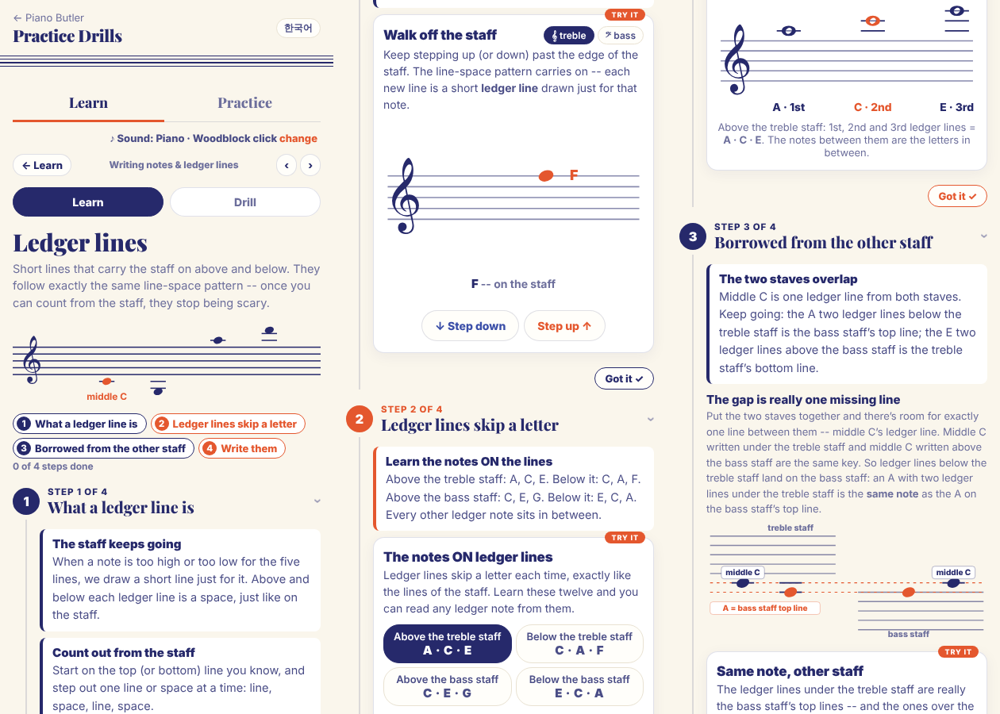
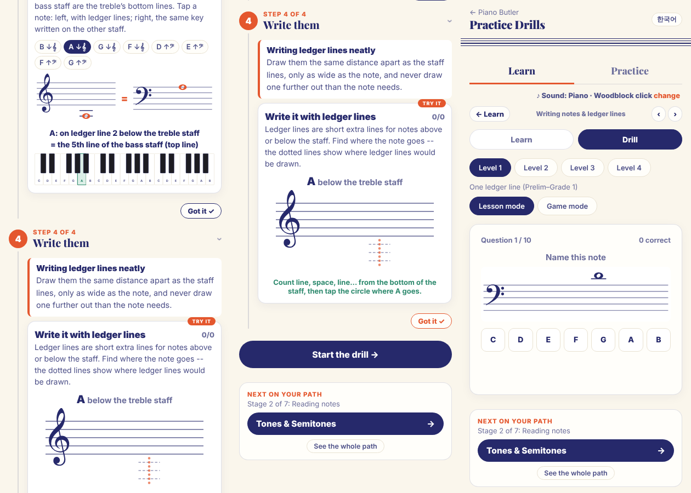

Built on what you already decided: Clara's short line has been her ladder rung since chapter 4, and now it gets its real name; Queensland and Kingsland are the two staves (chapter 5); high is the bird's sky and low is the turtle's sea (chapter 2); chapter 5's three Cs grow into five Cs. It also follows the Book rules: one idea per page, nothing twice, set tasks, big and full pages.
AMEB (checked): Music Craft Preliminary -- one ledger line below the treble staff; Grade 1 -- one above and below both staves; Grade 2 -- up to three. Theory of Music Grade 1 -- two; Grade 2 -- three. Both spellings, "ledger" and "leger", are accepted.
The draft, 7 pages: 1 the ladders out of both lands · 2 Clara's rung is a ledger line (and how to draw one: one ✓, three ✗) · 3 Up into the sky (G in the space, then A, C, E on the rungs) · 4 Down into the sea (F in the space, then E, C, A on the rungs) · 5 Between the lands (borrowed rungs: the same key, written two ways) · 6 Five Cs, from Sea C to Sky C (every ledger note in the book is a step or a skip from one of them) · 7 My five checks.
How to answer: reply with codes, e.g. "B1 yes, B3 ..., A3 ok". Yellow marks in the draft (B1, B2, B3, B4, B6) show the lines that wait for your answers.
When your students meet ledger lines, what goes wrong most often? (For example: counting the rungs wrong, reading a note under Queensland as a Kingsland note, drawing the lines too long or too far apart.)
Counting out from the staff, or knowing a few ledger notes by heart (like the five Cs)? How do you move a student from counting to knowing?
One tip for parents for this chapter: what should five minutes at home look like?
A · what today's chapter 6 does (the online lesson and drill that exist now) · B · your decisions, each with my recommendation · the 7 draft pages · today's online lesson, for comparison.
Today chapter 6 is an online lesson (4 tool steps) and a 4-level drill, plus a Workbook and Teacher copy made in Phase 298, before the Book rules. No Lesson Book and no guide page yet.
The online lesson is not the Lesson Book on screen yet. After your OK it becomes the book on screen, like chapters 1-5, with a moving part for each page.
Names don't match chapters 4-5: "treble staff", "bass staff", "middle C". Draft: Queensland, Kingsland, Clara's C, Clara's rung.
Step 2 asks the child to learn twelve notes in four lists (A C E · C A F · C E G · E C A). It is heavy, and it is not how chapter 5 reads (from landmarks). Draft: count out of the land (line, space, rung) and read from the five Cs. See B5.
The drill's level 1 mixes both clefs, notes above and below, and the notes just outside the staff. There is no level for the rungs between the lands and none for the Cs. See B7.
On the draft pages, the moving parts on screen are today's tools for now, and some don't fit their page: "Walk off the staff" opens on Queensland on the Kingsland page; "Write them" and "Same note, other staff" ask for notes the book doesn't teach (G3, F3, F4, G4). They get rebuilt after your answers.
The old Workbook and Teacher copy (Phase 298) get rebuilt by the Book rules after the Lesson Book: set, solo, big, filled; nothing twice. See B8.
The chapter's picture in the app is in the old blue colours. It gets its own: the ladders out of the two lands.
Small, all chapters: the heading "In this chapter" on page 1 stays in English in the Korean books (chapters 1-5 too). I'll fix it everywhere when chapter 6 is applied.
A separate reviewer checked every note, ledger-line count and rung label in the pictures and the text, in English and Korean, and found them all correct. I applied its fixes:
The name: "ledger line" (AMEB also accepts "leger line"), in Korean 덧줄.
Recledger line. The Teacher copy says once that "leger" is the same thing.
The world: ledger lines are the rungs of a ladder that lets notes climb out of the lands, up into the bird's sky and down into the turtle's sea.
Recyes. It is chapter 4's rung growing up, and it reuses chapter 2's sky and sea instead of adding something new.
Names for the two new Cs: Sky C (two rungs above Queensland, C6) and Sea C (two rungs below Kingsland, C2). Other options: "High C / Low C", or "the bird's C / the turtle's C".
RecSky C and Sea C. Together with chapter 5's Cs that makes Sea, Kingsland, Clara's, Queensland and Sky.
How far: up to three rungs above and below (AMEB Grade 2). Preliminary needs only one rung below Queensland; Grade 1 needs one rung above and below both lands.
Recthree in the book. The drill levels go by rung count, so a Preliminary student can stop after level 1.
The four lists (A C E, C A F, C E G, E C A) come out of the student's book. The student counts out of the land and reads from the five Cs instead.
Recdrop them from the book; keep one line about them in the Teacher copy.
Between the lands (page 5): the A on rung 2 under Queensland is Kingsland's top line; the E on rung 2 over Kingsland is Queensland's bottom line; Clara's C is one rung from both. Keep it in chapter 6?
Reckeep it. It explains why Clara's rung belongs to both lands, and Grade 1 needs it.
Drill levels, one idea each:
1 One rung, Queensland (C and B below, A and B above; Preliminary)
2 One rung, Kingsland (C and D above, E and D below)
3 Two rungs, both lands
4 Sky C and Sea C hop (a step or a skip from them)
5 Between the lands: the same key, two ways
6 Three rungs, fast (Grade 2)
7 Find it on the keys (exact octave)
Recthese seven.
Workbook ideas (set and solo, built after the book):
W1 draw the rungs neatly for set notes
W2 climb up out of Queensland (write the letters on the ladder)
W3 climb down out of Kingsland
W4 the same key two ways (write the twin in the other land)
W5 find the five Cs and name them
W6 a secret message in ledger notes (words like CAB, BEAD, ACE)
last page: the check-up on paper
Recall six. Tell me any to drop.
The opener picture: minimal, as for chapters 4 and 5. It shows the grand staff with a ladder up to the bird and a ladder down to the turtle, and Clara on her rung.
Reckeep it minimal.
The lesson's four steps today: walk off the staff; the notes ON ledger lines (twelve notes in four lists); borrowed from the other staff; write them.


Right: the drill today. Level 1, "One ledger line", mixes both clefs from the first question; levels 2-4 are two lines, three lines, and keys.